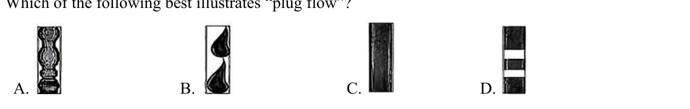

Shenzhen Reading D Q33 - exact candidate selection
Stop A. Nothing on this page is Canonical. No selection is the default. Opening or exporting this page is not Owner acceptance.
Immutable full-strip baseline

Source-truth checklists
Exact exported confirmation
Choose one exact digest per Option, choose rejection, or leave blank. Source crop is offered on equal authority. Blank or partial export remains unresolved.